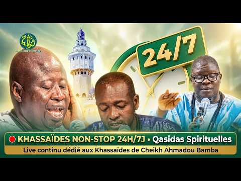

Audio des khassaïdes
Vingt-trois enregistrements à écouter en ligne, sans enregistrement sur le téléphone.
Média
Écoutez les khassaïdes en ligne, parcourez les captures de l’application et regardez les vidéos de présentation.
Écoutez les khassaïdes, découvrez l’application en images et regardez les vidéos de présentation. Sans publicité ni compte.
Vingt-trois enregistrements à écouter en ligne, sans enregistrement sur le téléphone.
Les PDF sont consultables depuis la bibliothèque, en ligne ou dans l’application après téléchargement volontaire.
La même icône accompagne le site et l’application Android, dans un cadre vert profond et or.
Trois présentations à lire directement ici.
Sept chaînes mourides en aperçus cliquables, ouvertes dans un nouvel onglet.
Six vues prises directement dans l’application. Cliquez sur une capture pour l’ouvrir en grand.


Les onze captures sont aussi réunies sur la page des aperçus.
Trois vidéos de présentation, lisibles directement sur cette page, sans publicité ni compte.
La bibliothèque, la voie mouride, l’audio et la recherche globale en un parcours rapide.
Les khassaïdes, les prières, les widgets et XAM YOONWI tels qu’ils apparaissent sur le téléphone.
Le site et l’application Android réunis en trente secondes.
Les vidéos se lisent en ligne, sans téléchargement.
Sept aperçus pour rejoindre les directs de la Grande Mosquée de Touba et des chaînes mourides. Cliquez sur un aperçu : YouTube s’ouvre dans un nouvel onglet.
Chaîne officielle IP-TV de la Grande Mosquée de Touba, par Moukhaddamatoul Khidma : prières, conférences et directs depuis la mosquée.

Chaîne culturelle et religieuse basée à Touba, près de la Grande Mosquée : directs, reportages et actualités mourides.
Télévision islamique au service de Wakeur Xaadimu Rassoul : directs des Jataayu Mouride, Magal, Gamous et Ziarras.

Dahira Yi du Dimanche : enseignements, rencontres et retransmissions en direct en haute définition.

Chaîne dédiée au patrimoine mouride : khassaïdes en continu, enseignements et directs depuis Touba.

Chaîne d’Hizbut Tarqiyyah, « À la découverte de l’Univers Touba » : matinale As-Sabaah et directs.

Directs et événements de Touba : discours du Khalife général, Magal et rencontres de la cité sainte.
Les aperçus sont enregistrés sur notre site : aucune image n’est demandée à Google pendant votre visite. Les directs dépendent des chaînes externes ; leur disponibilité n’est pas contrôlée par Diiwaanu Xassida Yi.